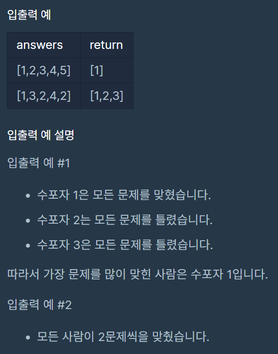

문제 설명
수포자는 수학을 포기한 사람의 준말입니다. 수포자 삼인방은 모의고사에 수학 문제를 전부 찍으려 합니다. 수포자는 1번 문제부터 마지막 문제까지 다음과 같이 찍습니다.
1번 수포자가 찍는 방식: 1, 2, 3, 4, 5, 1, 2, 3, 4, 5, ...
2번 수포자가 찍는 방식: 2, 1, 2, 3, 2, 4, 2, 5, 2, 1, 2, 3, 2, 4, 2, 5, ...
3번 수포자가 찍는 방식: 3, 3, 1, 1, 2, 2, 4, 4, 5, 5, 3, 3, 1, 1, 2, 2, 4, 4, 5, 5, ...
1번 문제부터 마지막 문제까지의 정답이 순서대로 들은 배열 answers가 주어졌을 때, 가장 많은 문제를 맞힌 사람이 누구인지 배열에 담아 return 하도록 solution 함수를 작성해주세요.
제한 조건
- 시험은 최대 10,000 문제로 구성되어있습니다.
- 문제의 정답은 1, 2, 3, 4, 5중 하나입니다.
- 가장 높은 점수를 받은 사람이 여럿일 경우, return하는 값을 오름차순 정렬해주세요.

const p1Answer = [1, 2, 3, 4, 5];
const p2Answer = [2, 1, 2, 3, 2, 4, 2, 5];
const p3Answer = [ 3, 3, 1, 1, 2, 2, 4, 4, 5, 5];
// 정답 풀이
function checkPoint(pAnswer, answers) {
let result = 0;
const pAnswerLng = pAnswer.length;
answers.forEach((v, i) => {
const idx = i >= pAnswerLng ? parseInt(i % pAnswerLng): i;
result = pAnswer[idx] === v ? result+1 : result;
});
return result;
}
function solution(answers) {
let winner = [];
let answer = [];
let maxWinPoint = 0;
winner = [
checkPoint(p1Answer, answers),
checkPoint(p2Answer, answers),
checkPoint(p3Answer, answers)
];
//answer.sort((a, b) => a - b);
maxWinPoint = Math.max(...winner);
winner.forEach((v, i) => {
v === maxWinPoint && answer.push(i+1);
});
return answer;
}